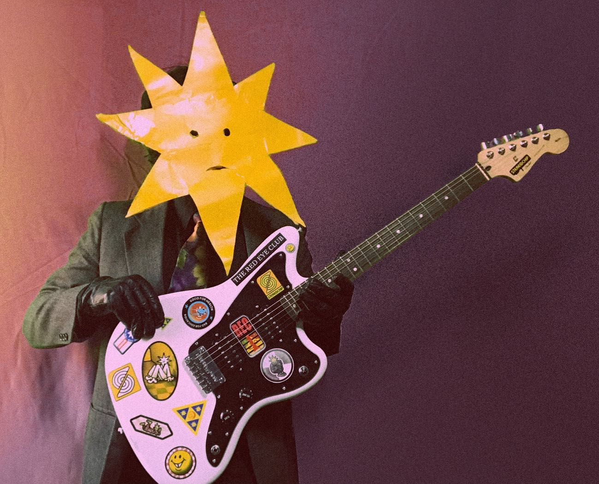

DESFASE TEMPORAL: LA ENERGÍA ELÉCTRICA DE ESPASMO

La agrupación mexicana Desfase Temporal irrumpe con su nuevo sencillo titulado “Espasmo”. Este tema no es solo un lanzamiento más; es el primer adelanto de su próximo EP "Sesiones de una Pieza", un proyecto que busca redefinir la forma en que la banda presenta su música al mundo.
Grabado enteramente en formato de directo, "Espasmo" captura la esencia más pura de la banda. Al prescindir de las correcciones infinitas del estudio convencional, el sencillo transmite una vibración honesta, rescatando esa energía eléctrica y cruda que solo se manifiesta cuando los músicos tocan simultáneamente en un mismo espacio.

IDENTIDAD Y SONIDO
Musicalmente, la propuesta navega entre el rock alternativo y los tintes progresivos. El resultado es un sonido orgánico y dinámico que se siente profundamente humano. "Espasmo" es un recordatorio necesario en la era digital: la mejor música es aquella que suena real y se entrega sin pretensiones ni filtros excesivos.
ANÁLISIS TÉCNICO: SESIÓN DE UNA PIEZA
- METODOLOGÍA: Grabación en una sola toma (One-take).
- DINÁMICA: Transición entre pasajes atmosféricos y explosiones de rock.
- CONCEPTO: Captura de energía espontánea vs. perfección sintética.
- ESTADO: Anticipo oficial del EP 2026.

EQUIPO Y PRODUCCIÓN
- GRABACIÓN: Formato Live Session.
- LOCALIZACIÓN: CDMX.
- ESTILO VISUAL: Glitch / VHS / High Contrast.
- DISTRIBUCIÓN: Independiente.